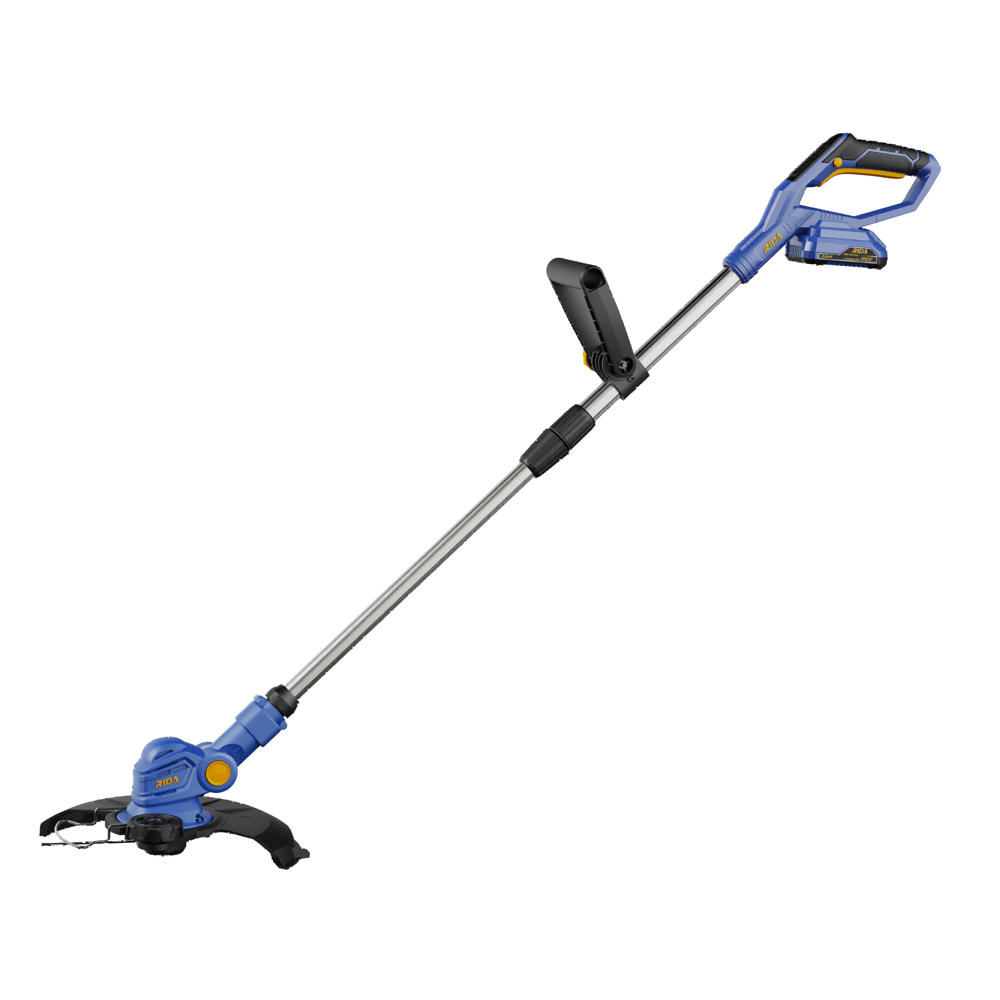

RIDA
Kit Aparador de relva 280
Kit de aparador de relva sem fio RIDA para manutenção prática e confortável do jardim.
Voltage20V
No-Load Speed9000rpm
Trimming Diameter280mm
Telescopic Rod250mm
Line DiameterΦ1.65 Helix
Line Length5m

Kit de aparador de relva sem fio RIDA para manutenção prática e confortável do jardim.